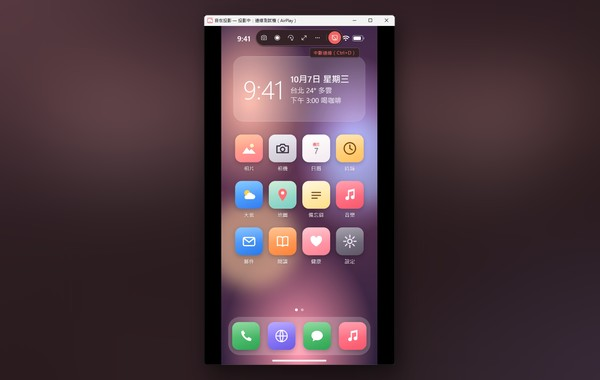
iPhone / iPad 鏡像iPhone / iPad mirroring
AirPlay，免裝 App，畫面加聲音。AirPlay, no app on the phone, picture and sound.
手機投影 + 遠端控制・免費開源Phone mirroring + remote control · Free & open source
把手機畫面投到 Windows 電腦；也能反過來，用手機遠端控制電腦。iPhone 不用裝 App，Android 可用滑鼠鍵盤操控，遠端控制只要手機瀏覽器。錄影、截圖、放大、翻譯都在同一個視窗，資料不離開你家的網路。Put your phone on a Windows PC, or the other way round: control the PC from your phone. No app on the iPhone, mouse and keyboard control for Android, and remote control needs only a phone browser. Record, capture, zoom and translate in one window; nothing leaves your home network.
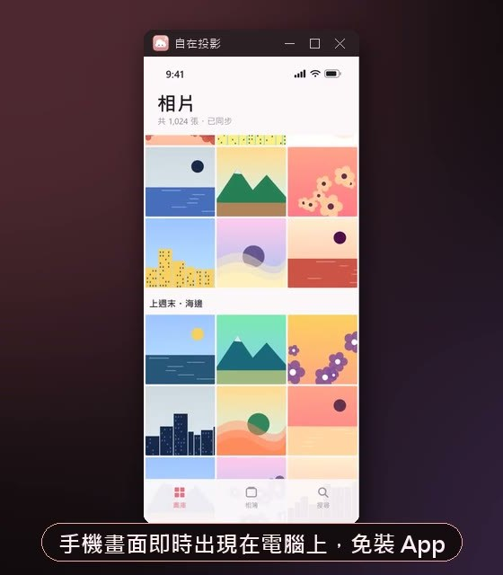
實際畫面：iPhone 的相簿出現在電腦上的自在投影視窗（手機內容為示範用合成畫面）。Real app: an iPhone's Photos in the Zizai Cast window on the PC (synthetic demo content).
手機投影Phone mirroring
開始前Before you start：下載並安裝自在投影（不需要系統管理員權限），手機和電腦連同一個 Wi‑Fi（不是訪客網路、先關 VPN）。第一次開啟時 Windows 防火牆詢問，請允許「私人網路」。低延遲（電腦端解碼到顯示約 3 ms），最高 4K 60 fps。: download and install Zizai Cast (no admin rights) and put the phone and PC on the same Wi‑Fi (not a guest network; turn VPNs off). Allow Private networks when Windows Firewall asks the first time. Low latency (about 3 ms decode to display on the PC), up to 4K at 60 fps.
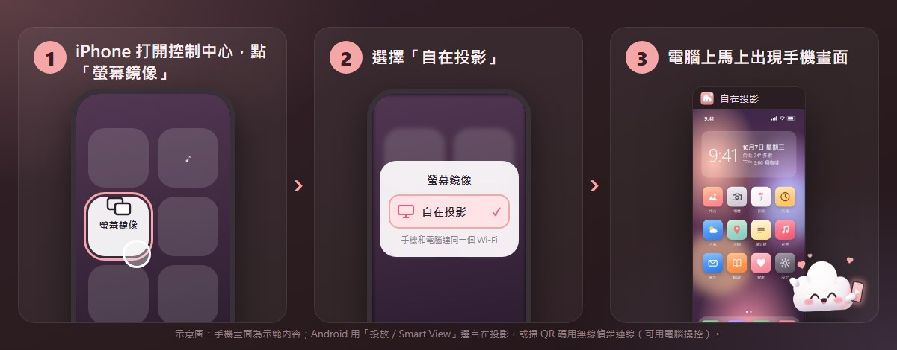
AirPlay・免裝 App · no app
Miracast
無線偵錯・Android 11 以上Wireless debugging · Android 11+

AirPlay，免裝 App，畫面加聲音。AirPlay, no app on the phone, picture and sound.
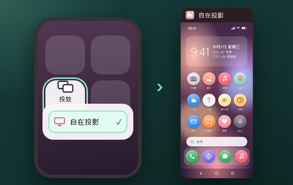
手機內建的「投放／Smart View」直接選自在投影。Pick it from the phone's Cast / Smart View tile.
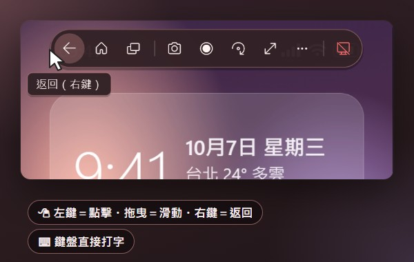
點擊、滑動、滾輪、打字；掃 QR 碼配對，之後自動重連。Click, swipe, scroll, type; pair with a QR code, it reconnects by itself.
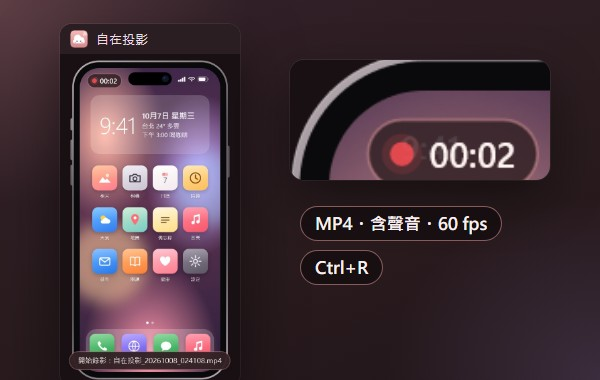
Ctrl+R 錄 MP4（60 fps、含聲音），Ctrl+S 存 PNG，Ctrl+F 加 iPhone 外框。Ctrl+R records MP4 (60 fps, with audio), Ctrl+S saves a PNG, Ctrl+F adds an iPhone frame.
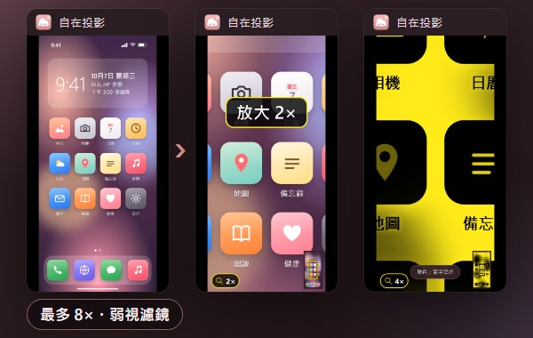
最多 8 倍，加強對比、黑白、反轉、黃字黑底，可凍結畫面。Up to 8×, more contrast, greyscale, inverted, yellow on black; freeze the picture.
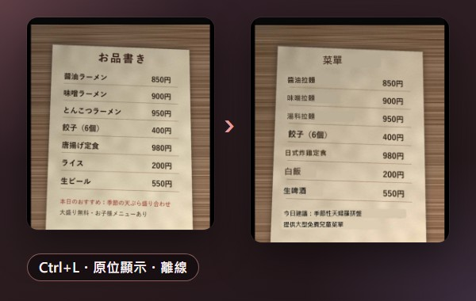
Ctrl+L：英、日、韓、簡中翻成繁中，離線在電腦上執行（圖中菜單為合成測試圖）。Ctrl+L: English, Japanese, Korean and Simplified Chinese, offline on your PC (the menu is a synthetic test picture).
另有簡報畫筆、拖檔到視窗、傳到手機、四種主題、四語介面和一鍵更新（不會自己偷偷更新）。iPhone 不能從電腦操控（AirPlay 的限制）。Also: a presentation pen, drop files on the window, send to phone, four themes, four UI languages and one-click updates (never by itself). An iPhone can't be controlled from the PC (an AirPlay limit).
遠端控制Remote control
手機的瀏覽器（iPhone 用 Safari、Android 用 Chrome）就能看到電腦畫面、聽到電腦的聲音，並用手指操控滑鼠和鍵盤，手機不用裝 App。在家掃 QR 碼；人在外面，用固定網址加密碼。預設關閉，在主視窗的「遠端控制」分頁打開。A phone's browser (Safari on iPhone, Chrome on Android) shows you the PC's screen, plays its sound and lets you control the mouse and keyboard with your fingers, with no app on the phone. At home, scan a QR code; away from home, use a fixed address and a password. Off by default: turn it on in the Remote control tab of the main window.
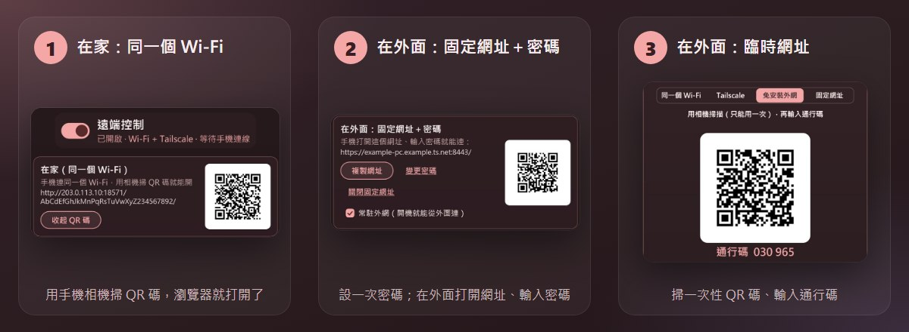
同一個 Wi‑Fi・掃 QR 碼Same Wi‑Fi · scan a QR code
Tailscale Funnel・推薦Tailscale Funnel · recommended
免安裝・偶爾用一次Nothing to install · for the odd time
給朋友用：你自己只要輸入密碼。要讓別人暫時連進來，按「新增臨時帳號」，選有效時間（用一次到 7 天）、可操作或僅觀看、能不能傳檔，再按「複製全部」把網址和密碼傳給對方。網址已經帶上帳號（在 # 後面），朋友打開後也只要輸入密碼；連上時你在電腦按「允許」，到期自動刪除（需先開固定網址）。手機也裝 Tailscale 的話，還能「像在家一樣」連；臨時網址不用裝任何東西，由程式附帶的 cloudflared 轉送。圖中的網址、手機內容都是示範用的虛構資料。For a friend: you only type the password yourself. To let someone in for a while, press Add a temporary account, pick the validity (once to 7 days), operate or view only, and whether files are allowed, then use Copy all to send them the address and password. The address already carries the account (after the #), so your friend also only types the password; you press Allow on the PC when they connect, and the account is deleted when it expires (the fixed address has to be on). With Tailscale on the phone too it works like at home; the temporary address needs nothing installed (the program bundles cloudflared). The addresses and phone content in the images are made up.
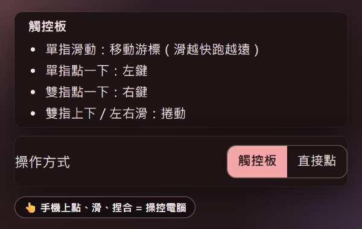
「直接點」點哪裡按哪裡（預設）；「觸控板」像筆電：單指移動、點一下左鍵、雙指點右鍵、雙指捲動、捏合縮放。三指點一下叫出鍵盤，也有 Ctrl／Alt／Win 組合鍵和雙向剪貼簿。Direct clicks where you tap (the default); Trackpad works like a laptop: one finger moves, tap to click, two-finger tap to right-click, two fingers to scroll, pinch to zoom. A three-finger tap opens the keyboard; Ctrl / Alt / Win combinations and a two-way clipboard too.
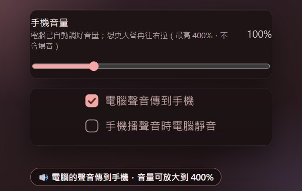
電腦在播什麼，手機就聽到什麼；聲音會自動調到適當大小，手機音量最高 400%。想要的話，勾「手機播聲音時電腦靜音」。Whatever the PC plays, the phone plays; the phone volume goes up to 400%, levelled automatically. Tick Mute the PC while the phone plays sound if you like.
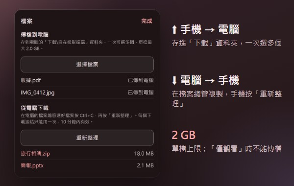
手機傳到電腦：存進「下載\自在投影遠端」，單檔最大 2 GB；「僅觀看」時不能傳檔。電腦傳到手機：在檔案總管複製檔案，手機按「重新整理」就能下載。Phone to PC: saved in Downloads\自在投影遠端, up to 2 GB each; no file transfer in View only. PC to phone: copy files in File Explorer and tap Refresh on the phone.
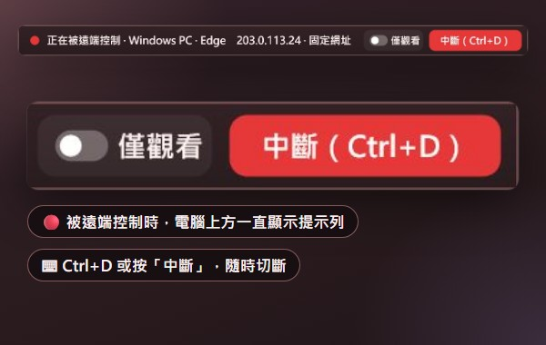
連線期間，電腦螢幕上方一直顯示「正在被遠端控制」與連線來源；按「中斷」或 Ctrl+D 隨時切斷。從外面連線的手機斷線後，電腦可以自動鎖定。While a phone is connected a bar at the top of the PC screen says Remote control in progress and where it comes from; press End or Ctrl+D to cut it any time. When a phone connected from outside drops, the PC can lock itself.
新功能・v0.8.3.5What's new · v0.8.3.5
在另一台電腦的瀏覽器終於能正常點擊、打字（左右中鍵、滾輪、拖曳、輸入法），滑鼠移到最上方有工具列：全螢幕、切換螢幕、剪貼簿、遊戲模式。
Clicking and typing now work from another computer’s browser (every button, wheel, dragging, its input method); a bar at the top for full screen, screens, clipboard and game mode.
朋友登入後只要按一次「允許」，換畫質、切換螢幕、斷線重連都不會再問；臨時帳號預設可以傳檔。
One Allow after your friend signs in: switching quality or screens and reconnecting no longer ask again; temporary accounts can transfer files by default.
很快地關掉又打開遠端控制，固定網址不會再消失；連點兩下開關只算一次。
Turning remote control off and quickly on again no longer loses the fixed address; a double click on the switch counts once.
觸控板模式畫出電腦游標的位置；新增「統計」按鈕；不能傳檔時「檔案」按鈕變灰並說明原因。
Trackpad mode shows where the PC pointer is; a new Stats button; the Files button is greyed with the reason when files are off.
點到系統管理員權限的視窗時，手機頁會直接說明為什麼點不到、該怎麼做。
Clicking a window run as administrator now tells you why it can’t be reached and what to do.
完整更新內容見 Releases 頁面。Full change list on the Releases page.
需求與下載Requirements & downloads
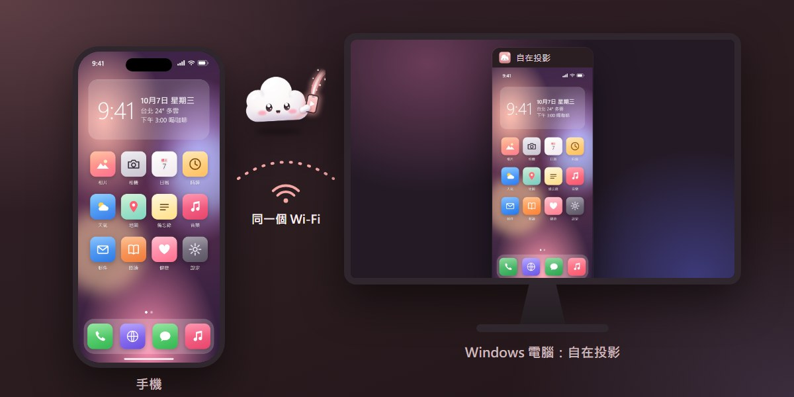
| 電腦 | Windows 10 / 11，64 位元 |
|---|---|
| 網路 | 手機和電腦在同一個區域網路（建議 5 GHz Wi‑Fi 或電腦接網路線） |
| iPhone / iPad | 有「螢幕鏡像」即可，免裝 App |
| Android 投放 | 手機支援投放／Smart View；電腦需「無線顯示器」功能與支援的 Wi‑Fi 網卡（Pixel 不支援 Miracast） |
| Android 電腦操控 | Android 11 以上，開啟無線偵錯 |
| 1440p / 4K | 需要「HEVC 影片延伸模組」，沒有時自動用 1080p |
| PC | Windows 10 / 11, 64-bit |
|---|---|
| Network | Phone and PC on the same LAN (5 GHz Wi‑Fi or a wired PC recommended) |
| iPhone / iPad | Screen Mirroring, no app needed |
| Android Cast | Phone with Cast / Smart View; PC with the “Wireless Display” feature and a supporting Wi‑Fi adapter (Pixel phones don't do Miracast) |
| Android control | Android 11+ with Wireless debugging |
| 1440p / 4K | HEVC Video Extensions; otherwise 1080p |
| zizai-setup-latest.exe | Windows 安裝程式（v0.8.3.5），免系統管理員權限。備用：GitHub Releases。The Windows installer (v0.8.3.5), no admin rights. Backup: GitHub Releases. |
ZizaiCast-<版本>-source.zip | 該版本的完整原始碼與建置說明（在 Release 頁面）Complete source of that version with build instructions (on the release page) |
ZizaiCast-<版本>-deps-source.zip | 安裝程式內含第三方函式庫的原始碼Sources of the bundled third-party libraries |
開發者在一台電腦上的實測（RTX 3060 Ti，2026 年 10 月）：電腦端解碼到顯示約 3 ms、最高 3840×2160 60 fps、連續 61 分鐘無記憶體洩漏；整體延遲還包含手機編碼與 Wi‑Fi，會依設備與網路而不同。Developer measurements on one PC (RTX 3060 Ti, October 2026): about 3 ms decode → display on the PC, up to 3840×2160 at 60 fps, 61 minutes continuous with no memory leaks; end-to-end latency also includes the phone's encoder and Wi‑Fi and varies by device and network.
隱私Privacy
畫面、聲音、錄影、截圖都只在你的區域網路和電腦裡。沒有遙測、沒有分析、沒有廣告、不用帳號。Picture, sound, recordings and screenshots stay on your LAN and your PC. No telemetry, no analytics, no ads, no account.
update.json，不帶任何裝置資訊。/download/ 下載安裝程式，並以 SHA-256 驗證。%LOCALAPPDATA%\PhoneMirror\settings.ini 加一行 update_url=。update.json from GitHub, with no device information./download/ and verified with SHA-256.update_url= to %LOCALAPPDATA%\PhoneMirror\settings.ini.完整隱私說明（含每個連線的網址與程式碼位置）Full privacy notes (every address and the source files)
netsh wlan show drivers 顯示 Wireless Display Supported: Yes）。不行就改用無線偵錯。netsh wlan show drivers should say Wireless Display Supported: Yes). Otherwise use wireless debugging.授權與原始碼License & source
自在投影依 GNU 通用公共授權條款第 3 版（GPL-3.0）散布。每個版本的完整對應原始碼，都附在與安裝程式相同的 GitHub Release 頁面：
Zizai Cast is distributed under the GNU General Public License version 3 (GPL-3.0). The complete Corresponding Source of every release is attached to the same GitHub release as the installer:
https://github.com/victor900106/ZizaiCast/releases
ZizaiCast-<version>-source.zip
ZizaiCast-<version>-deps-source.zip
第三方元件的授權與著作權聲明見 docs/licenses（含 SOURCE.md 原始碼提供方式）。自在投影建立在 UxPlay、scrcpy、FFmpeg、OpenSSL、Firefox Translations、PaddleOCR、llama.cpp 等開源專案之上。雲朵精靈「投投」是本專案的原創角色。
Third-party licences and notices, and how the source is provided (SOURCE.md): docs/licenses. Zizai Cast is built on UxPlay, scrcpy, FFmpeg, OpenSSL, Firefox Translations, PaddleOCR, llama.cpp and other open-source projects. Toutou the cloud sprite is an original character of this project.
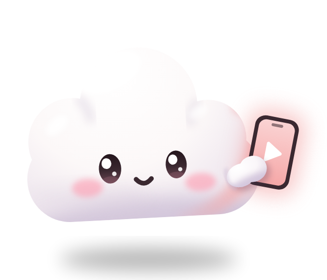
免費、開源、沒有廣告、不用帳號。Free, open source, no ads, no account.